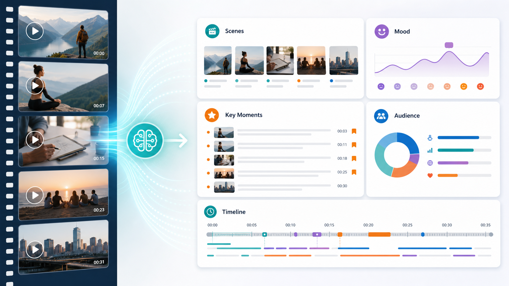

Промтзилла
Видеоанализ полезен для разборов уроков, интервью, рекламы, вебинаров и коротких роликов: ИИ быстро выделяет структуру и слабые места.

Пошаговая инструкция
- 1Загрузи видео или ссылку на ролик в инструмент анализа.
- 2Укажи цель: краткий пересказ, маркетинговый разбор, таймкоды или сценарный анализ.
- 3Попроси отделить факты из видео от предположений.
- 4Добавь формат ответа: таблица, список сцен, выводы, рекомендации.
- 5Проверь спорные моменты вручную, особенно имена, даты и цифры.
Какой результат просить
Хороший анализ должен перечислять сцены, смысловые блоки, настроение, ключевые цитаты и выводы, а не просто пересказывать ролик одним абзацем. Под такую задачу удобно открыть анализ видео нейросетью онлайн, дать исходник и сразу попросить структурированный результат.
Промт
RU
Проанализируй это видео. Сделай: — краткое содержание в 5-7 предложениях; — список сцен или смысловых блоков; — ключевые моменты с примерными таймкодами; — тональность и настроение; — предполагаемую аудиторию; — сильные и слабые места; — идеи, как использовать видео для статьи, поста или коротких роликов. Отделяй то, что точно видно или слышно в видео, от предположений. Если качество звука или картинки мешает анализу, укажи это отдельно.
EN
Analyze this video. Provide: — a short summary in 5-7 sentences; — a list of scenes or semantic blocks; — key moments with approximate timestamps; — tone and mood; — likely audience; — strengths and weaknesses; — ideas for turning the video into an article, post, or short clips. Separate what is clearly visible or audible from assumptions. If audio or image quality limits the analysis, mention it separately.
Важно
Нейросеть может ошибиться в распознавании людей, названий и фактов. Важные данные проверяй по оригиналу.
Теги